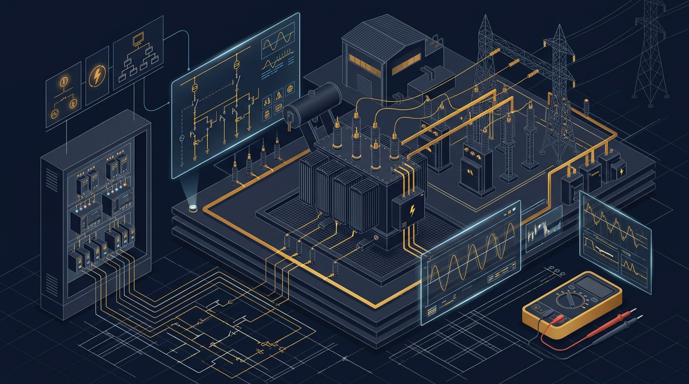

電験（電気主任技術者）の資格体系と太陽光
発電設備の電圧や出力規模によって、監督に必要な資格区分が法律（電気事業法）で定められています。
電験の級と担当できる太陽光発電所の規模
電験三種を持っていれば高圧〜特高22kV案件の監督が可能。大規模特高（66kV超）は電験二種が必要

高圧6.6kV連系（50kW〜2,000kW未満）および、特高22kV連系（出力5,000kW未満等）のメガソーラーを保安監督可能。AMの強力な武器。
66kV / 77kVの特別高圧送電線に直接連系する数十MW級の大規模メガソーラー（特別高圧変電所）を保安監督可能。
超高圧送電網（154kV / 275kV / 500kV）を含む、あらゆる電力設備を保安監督できる国内最上位資格。
保安監督の体制（選任・外部委託）
| 方式 | 対象設備の目安 | 概要 |
|---|---|---|
| 常駐選任 | 特高メガソーラー（2,000kW以上）、大型高圧 | 自社またはO&M会社から専任の主任技術者を現場に選任届出。 |
| 外部委託承認制度 | 高圧連系（出力5,000kW未満等の要件を満たす場合） | 常駐させず、電気保安法人（保安協会等）や個人管理技術者へ点検業務を委託できる制度。経済産業局長の承認が必要。 |
| 統括選任制度 | 同一構内・近接地の複数設備 | 一定の要件を満たす場合、1人の主任技術者が複数の発電所を統括して選任可能。 |
電験4科目 × 太陽光実務の超重要論点
① 法規（Laws & Regulations）
AM実務に直結する最重要科目。法令違反はFIT/FIPの交付金留保や業務改善命令に直結します。
・速報（48時間以内）：電話等で速やかに所轄産業保安監督部へ。
・詳報（30日以内）：原因と再発防止策を文書提出。
感電死傷、電気火災、波及事故（構外停電）、主要機器の損壊が報告対象。
逆潮流のある太陽光発電所の保護装置設置基準。
・高圧連系：OVGR、UVR、OVR、DGR、単独運転防止装置（受動・能動）の義務化。
・力率一定制御（標準95%など）の遵守義務。
・A種（10Ω以下）：高圧・特高機器の金属外箱（キュービクル外箱等）。
・B種（計算値Ω）：変圧器の低圧側中性点・接地端子。
・C種（10Ω以下）：300V超の低圧機器外箱。
・D種（100Ω以下）：300V以下の低圧機器外箱（パネル架台等）。
② 電力（Power Systems）
受変電設備、送電、短絡事故、パーセントインピーダンスの理論。
変圧器や系統のインピーダンス（%Z）から、短絡事故時に流れる巨大な短絡電流（Is）を算定。キュービクルの真空遮断器（VCB）の定格遮断電流（例：12.5kAなど）を選定する根拠となる。
太陽光から系統へ大量の有効電力（P）を逆潮流させると、系統の抵抗（R）によって受電点電圧が上昇する。進相無効電力（Q）を吸収（力率95%遅れ制御など）させることで、電圧上昇を抑える仕組み。
③ 機械（Electrical Machines & Power Electronics）
PCS（インバータ）、パワー半導体、変圧器の損失計算。
変圧器の損失には、負荷にかかわらず一定の「無負荷損（鉄損 Pi）」と、電流の2乗に比例する「負荷損（銅損 Pc）」がある。「鉄損 ＝ 銅損（Pi ＝ Pc）」の負荷率のときに変圧器の変換効率が最大になる。
DCからACへの変換にはIGBT（絶縁ゲートバイポーラトランジスタ）やSiC（炭化ケイ素）素子を用いたPWM（パルス幅変調）制御を使用。交流の波形をきれいな正弦波に近づけ、高調波歪み（THD）を抑制する。
交流（AC）は1秒間に100〜120回電圧がゼロ（零点）を通るためアーク放電が自然消弧しやすい。一方、直流（DC）は零点がないためアークが途切れず燃え続ける。ストリング配線の接触不良が火災に直結する理由。
④ 理論（Electrical Circuit Theory）
電気の根幹となる三相交流計算と交流電力公式。
V：線間電圧 [V]、I：線電流 [A]、cosθ：力率。PCSの容量（kVA）と売電可能電力（kW）の関係を読み解く最重要式。
【実務ツール】電験・電気計算クイック計算機
高圧連系（6.6kV）やPCS出力（400V）での電流計算、ケーブル電圧降下をブラウザ上で瞬時に算出できます。
三相交流 電力・線電流クイック計算ツール
PCS定格容量や連系点受電電力から、ケーブルに流れる「線電流（アンペア）」を計算します。
電験三種・二種の試験制度と勉強法
現在、電験三種は年2回（上期・下期）開催され、パソコンで受検できるCBT方式が導入されたことで受験チャンスが倍増。土日や平日の希望日時を選んで受験可能になりました。
4科目すべてを一度に合格する必要はありません。合格した科目は翌年・翌々年（最大計5回分）免除されるため、1年あたり1〜2科目ずつ着実に突破する戦略が王道です。
ステップ1：理論 ＆ 法規
理論は全科目の土台となるため最初にマスター。法規は暗記と計算のバランスが良く実務ですぐ役に立つ。
ステップ2：電力 ＆ 機械
理論の知識をベースに、受変電・インバータ・太陽電池の専門知識を固めて合格を掴む。
AM視点の電験チェックリスト
- 発電所の選任形態（常駐専任／統括選任／外部委託承認）の要件と届出先を把握しているか
- 保安規程の最新版が事業所に備え付けられ、年次点検計画と一致しているか
- 事故発生時の報告フロー（所轄産業保安監督部への速報48時間・詳報30日）が体制図に明記されているか
- 電力会社との連系協議資料（受電点単線結線図・保護継電器整定書）を保管しているか
- 変圧器のB種接地抵抗値が点検記録で基準値（150/I Ω以下）を満たしているか確認したか